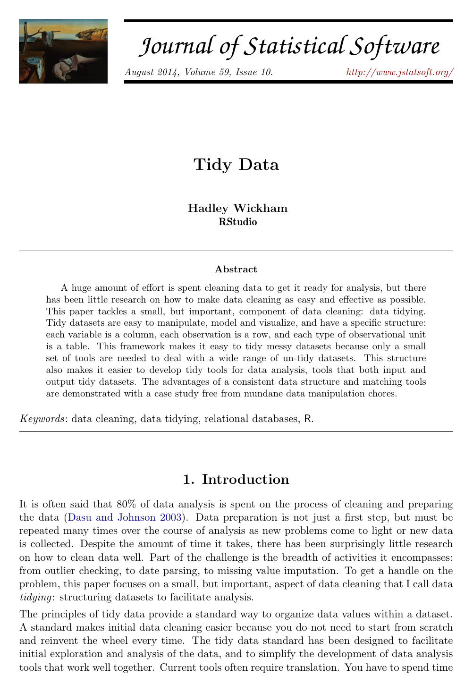
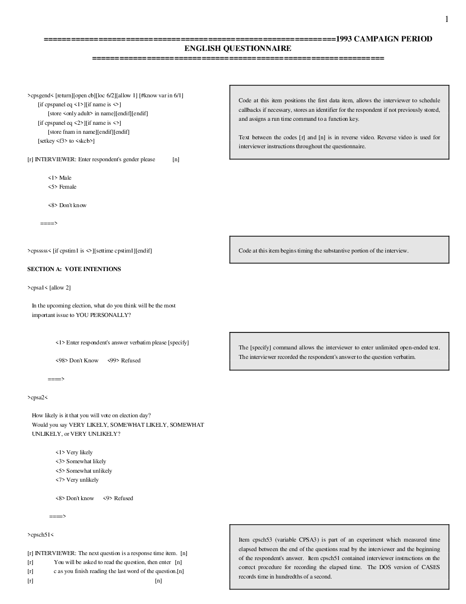
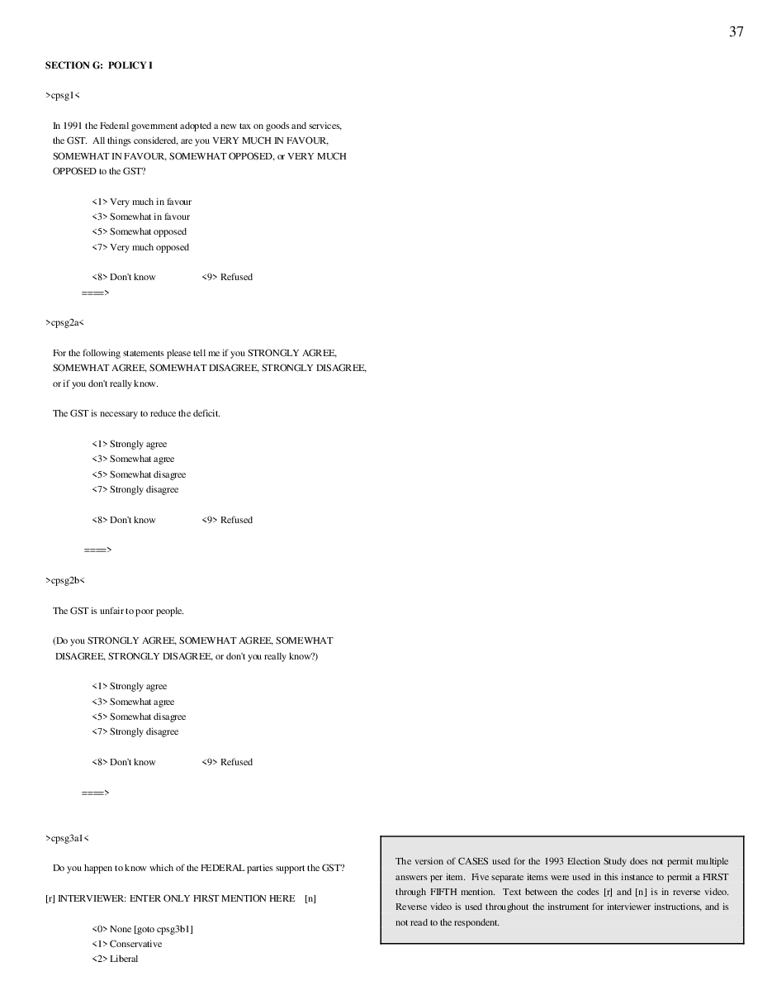
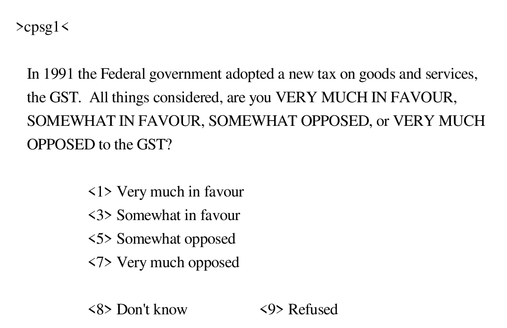

POL-2000 · Méthodologie quantitative
Préparer ses données avec R
Séance 4 · jeudi 24 septembre 2026
Faculté des sciences sociales Automne 2026
Préparer ses données avec R
Lire un codebook, recoder, gérer les valeurs manquantes.
L'examen 1 ouvre aujourd'hui.
Des questions sur la semaine dernière ?
Notre objectif
Gauche ou droite, de 0 à 10
> summary(df$cps25_lr_scale_bef_1)
Min. 1st Qu. Median Mean 3rd Qu. Max. -99.00 2.00 5.00 -11.44 6.00 10.00
Une échelle de 0 à 10. Une moyenne de -11,44 ?
> ▍Des données tidy

« Les jeux de données bien rangés se ressemblent tous ; chaque jeu de données désordonné l’est à sa façon. » Hadley Wickham, « Tidy Data », 2014
POURQUOI Le format tidy, c’est le chemin de moindre résistance pour l’analyse.
Le vrai travail
Wickham (2014), d’après Dasu et Johnson (2003)
Du brut au propre
- 1Lire le codebook
- 2Renommer
- 3Traduire les codes
- 4-99 devient NA
df 20 180 lignes × 1 440 colonnes df_propre 20 180 lignes × 6 colonnesÉtude électorale canadienne 2025 · quatre vraies personnes
Un tableau, vu de près
Étude électorale canadienne 2025 · les cinq premières lignes
Trois règles
1Chaque colonne est une variable.
2Chaque ligne est une observation.
3Chaque tableau est un type d’unité observée.
Wickham (2014), « Tidy Data »
Des valeurs dans les en-têtes
Les tranches de revenu sont des valeurs, pas des variables.
| religion | <$10k | $10-20k | $20-30k |
|---|---|---|---|
| Agnostic | 27 | 34 | 60 |
| Atheist | 12 | 27 | 37 |
| Buddhist | 27 | 21 | 30 |
| … 11 colonnes | |||
Revenu et religion aux États-Unis, Pew Research Center · tidyr::relig_income
Les tranches de revenu en une colonne
relig_income |> pivot_longer(!religion, names_to = "revenu", values_to = "n")
| religion | <$10k | $10-20k | $20-30k |
|---|---|---|---|
| Agnostic | 27 | 34 | 60 |
| Atheist | 12 | 27 | 37 |
| Buddhist | 27 | 21 | 30 |
| … 11 colonnes | |||
| religion | revenu | n |
|---|---|---|
| Agnostic | <$10k | 27 |
| Agnostic | $10-20k | 34 |
| Agnostic | $20-30k | 60 |
| Agnostic | $30-40k | 81 |
| Agnostic | $40-50k | 76 |
| … 180 lignes | ||
Plusieurs variables dans une colonne
sp_m_014 cache trois variables : le diagnostic, le sexe, l’âge.
| country | year | sp_ | sp_ | sp_ | sp_ |
|---|---|---|---|---|---|
| Canada | 2010 | 3 | 30 | 1 | 28 |
| … 58 colonnes | |||||
Cas de tuberculose, Canada 2010, Organisation mondiale de la santé · tidyr::who2
Trois variables, trois colonnes
who2 |> pivot_longer(!c(country, year), names_to = c("diagnostic", "sexe", "age"), names_sep = "_", values_to = "cas", values_drop_na = TRUE)
| country | year | sp_ | sp_ | sp_ | sp_ |
|---|---|---|---|---|---|
| Canada | 2010 | 3 | 30 | 1 | 28 |
| … 58 colonnes | |||||
| country | year | diagnostic | sexe | age | cas |
|---|---|---|---|---|---|
| Canada | 2010 | sp | m | 014 | 3 |
| Canada | 2010 | sp | m | 1524 | 30 |
| Canada | 2010 | sp | f | 014 | 1 |
| Canada | 2010 | sp | f | 1524 | 28 |
| … 76 046 lignes | |||||
Des variables dans les lignes et les colonnes
Les jours sont en colonnes, les deux températures en lignes.
| id | mesure | d1 | d2 | d3 | d4 |
|---|---|---|---|---|---|
| MX17004 | tmax | NA | 27.3 | 24.1 | NA |
| MX17004 | tmin | NA | 14.4 | 14.4 | NA |
Station météo MX17004, Mexique, février 2010 · Global Historical Climatology Network, vignette « Tidy data » de tidyr
Les jours en lignes, les températures en colonnes
meteo |> pivot_longer(d1:d4, names_to = "jour", values_to = "temp", values_drop_na = TRUE) |> pivot_wider(names_from = mesure, values_from = temp)
| id | mesure | d1 | d2 | d3 | d4 |
|---|---|---|---|---|---|
| MX17004 | tmax | NA | 27.3 | 24.1 | NA |
| MX17004 | tmin | NA | 14.4 | 14.4 | NA |
| id | jour | tmax | tmin |
|---|---|---|---|
| MX17004 | d2 | 27.3 | 14.4 |
| MX17004 | d3 | 24.1 | 14.4 |
Plusieurs observations dans une ligne
Une observation : une chanson, une semaine.
| artist | track | wk1 | wk2 | wk3 |
|---|---|---|---|---|
| 2 Pac | Baby Don't Cry | 87 | 82 | 72 |
| 2Ge+her | The Hardest Pa | 91 | 87 | 92 |
| … 79 colonnes | ||||
Palmarès Billboard, 2000 · tidyr::billboard
Une ligne par chanson et par semaine
billboard |> select(artist, track, starts_with("wk")) |> pivot_longer(starts_with("wk"), names_to = "semaine", names_prefix = "wk", values_to = "rang", values_drop_na = TRUE)
| artist | track | wk1 | wk2 | wk3 |
|---|---|---|---|---|
| 2 Pac | Baby Don't Cry | 87 | 82 | 72 |
| 2Ge+her | The Hardest Pa | 91 | 87 | 92 |
| … 79 colonnes | ||||
| artist | track | semaine | rang |
|---|---|---|---|
| 2 Pac | Baby Don't Cry | 1 | 87 |
| 2 Pac | Baby Don't Cry | 2 | 82 |
| 2 Pac | Baby Don't Cry | 3 | 72 |
| 2 Pac | Baby Don't Cry | 4 | 77 |
| 2 Pac | Baby Don't Cry | 5 | 87 |
| 2 Pac | Baby Don't Cry | 6 | 94 |
| … 5 307 lignes | |||
Une observation dans plusieurs tableaux
Mêmes partis, mêmes colonnes, un fichier par élection.
| parti | sieges |
|---|---|
| PLC | 160 |
| PCC | 119 |
| BQ | 32 |
| NPD | 25 |
| PV | 2 |
| parti | sieges |
|---|---|
| PLC | 169 |
| PCC | 144 |
| BQ | 22 |
| NPD | 7 |
| PV | 1 |
Sièges à la Chambre des communes, élections de 2021 et 2025 · Élections Canada
Un seul tableau, avec l’année
bind_rows("2021" = sieges_2021, "2025" = sieges_2025, .id = "annee")
| parti | sieges |
|---|---|
| PLC | 160 |
| PCC | 119 |
| BQ | 32 |
| NPD | 25 |
| PV | 2 |
| parti | sieges |
|---|---|
| PLC | 169 |
| PCC | 144 |
| BQ | 22 |
| NPD | 7 |
| PV | 1 |
| annee | parti | sieges |
|---|---|---|
| 2021 | PLC | 160 |
| 2021 | PCC | 119 |
| 2021 | BQ | 32 |
| 2021 | NPD | 25 |
| 2021 | PV | 2 |
| 2025 | PLC | 169 |
| 2025 | PCC | 144 |
| 2025 | BQ | 22 |
| 2025 | NPD | 7 |
| 2025 | PV | 1 |
Les cinq problèmes
pivot_longer()pivot_longer(names_sep = )pivot_longer() + pivot_wider()pivot_longer()bind_rows()Wickham (2014), « Tidy Data »
Le codebook
Le dictionnaire des données.
Le codebook de 1993

pages 2 à 35

Étude électorale canadienne 1993 · questionnaire de la campagne, p. 37 · le PDF complet
Des codes illisibles
| CPSIGEN | CPSA3 | CPSG1 | CPSO11 | CPSA2 |
|---|---|---|---|---|
| 5 | 1 | 7 | 1 | 1 |
| 5 | 2 | 5 | 1 | 1 |
| 5 | 99 | 7 | 1 | 1 |
| 1 | 2 | 7 | 1 | 1 |
| 5 | 1 | 3 | 1 | 1 |
| 1 | 2 | 5 | 1 | 1 |
Que veut dire 7 ?
Étude électorale canadienne 1993 · données brutes et codebook
Lire une entrée

Quatre choses à trouver, chaque fois.
Le codebook, dans R
> attr(df$cps25_demsat, "label")
[1] "On the whole, how satisfied are you with\nthe way democracy works in Canada?"
> count(df, cps25_demsat)
# A tibble: 5 × 2 cps25_demsat n <dbl+lbl> <int> 1 1 [1. Very satisfied] 2971 2 2 [2. Fairly satisfied] 10576 3 3 [3. Not very satisfied] 4313 4 4 [4. Not at all satisfied] 1594 5 5 [5. Don't know/ Prefer not to answer] 726
> ▍Pause
Quinze minutes.
Recoder
Des codes du sondage aux catégories de votre question.
Poser une question à R
- 1
- 2
- 3
- 4
- 5
- 6
- 7
- 8
- 9
- 10
- 11
educ <- 1:11
cpso3 · Étude électorale canadienne 1993
Si…, alors…
ces93 <- ces93 |> mutate(ses_education = case_when( cpso3 <= 5 ~ "secondaire_ou_moins", cpso3 <= 7 ~ "collegial", cpso3 <= 11 ~ "universitaire" ))
Trois catégories, trois règles.
Quatre façons, un résultat
ces93$universitaire <- NA
ces93$universitaire[ces93$cpso3 >= 8] <- 1
ces93$universitaire[ces93$cpso3 < 8] <- 0ces93$universitaire <- ifelse(ces93$cpso3 >= 8, 1, 0)ces93 <- ces93 |>
mutate(universitaire = if_else(cpso3 >= 8, 1, 0))ces93 <- ces93 |>
mutate(universitaire = case_when(
cpso3 >= 8 ~ 1,
cpso3 < 8 ~ 0
))> table(ces93$universitaire, useNA = "ifany") 0 1 <NA> 1715 619 2537
Dans ce cours : le tidyverse, case_when().
Opérationnaliser
Trois catégories, dans R
> ces93 <- ces93 |> mutate(ses_education = case_when( cpso3 <= 5 ~ "secondaire_ou_moins", cpso3 <= 7 ~ "collegial", cpso3 <= 11 ~ "universitaire" ))
> count(ces93, ses_education)
# A tibble: 4 × 2 ses_education n <chr> <int> 1 collegial 476 2 secondaire_ou_moins 1239 3 universitaire 619 4 <NA> 2537
> ▍Toujours vérifier
Toutes les variables de 0 à 1
Trois variables, trois étendues différentes.
1 = ce que dit le nom
Dans le sondage, plus le code monte, moins on est satisfait.
De 0 à 1, dans R
> d <- d |> mutate(satisfaction = case_when( cps25_demsat == 1 ~ 1, cps25_demsat == 2 ~ 0.67, cps25_demsat == 3 ~ 0.33, cps25_demsat == 4 ~ 0 ))
> count(d, satisfaction)
# A tibble: 5 × 2
satisfaction n
<dbl> <int>
1 0 1594
2 0.33 4313
3 0.67 10576
4 1 2971
5 NA 726 > ▍Les valeurs manquantes
-99, « ne sait pas », NA et NaN.
Quatre sortes de vide
mean(…)-11.43717sum(is.na(df$cps25_votechoice))42710 / 0NaNis.na(NaN)TRUEÉtude électorale canadienne 2025 · 20 180 personnes
La moyenne, pas à pas
> ▍ - 1
- 2
- 3
- 4
Étude électorale canadienne 2025 · cps25_lr_scale_bef_1
Chaque variable coûte des lignes
age + scolarite + gauche_droite + satisfaction + ne_canada + vote drop_na() garde 13 404 personnes sur 20 180 · 6 776 retirées (34 %)
- Retirer les NA seulement sur les variables de votre analyse
drop_na(age, scolarite, gauche_droite)garde 16 962 - Les personnes retirées ne sont pas tirées au hasard : elles peuvent être différentes de celles qui restent
Une base propre
Six personnes, avant et après
df | cps25_ | cps25_ | cps25_ | cps25_ | cps25_ | cps25_ |
|---|---|---|---|---|---|
| 69 | 9 | 8 | 4 | 2 | 2 |
| 61 | 9 | 3 | 2 | 1 | 3 |
| 54 | 11 | 7 | 2 | 1 | 2 |
| 63 | 8 | -99 | 2 | 1 | 1 |
| 45 | 4 | -99 | 5 | 1 | NA |
| 68 | 7 | 8 | 3 | 2 | NA |
df_propre | age | scolarite | gauche_ | satisfaction | ne_ | vote |
|---|---|---|---|---|---|
| 69 | Universitaire | 8 | 0 | 0 | 2. Conservative Party |
| 61 | Universitaire | 3 | 0.67 | 1 | 3. NDP |
| 54 | Universitaire | 7 | 0.67 | 1 | 2. Conservative Party |
| 63 | Universitaire | NA | 0.67 | 1 | 1. Liberal Party |
| 45 | Secondaire ou moins | NA | NA | 1 | NA |
| 68 | Collégial | 8 | 0.33 | 0 | NA |
Six vraies personnes de l’Étude électorale canadienne 2025
Garder, nommer, sauvegarder
> df_propre <- d |> mutate(age = as.numeric(cps25_age_in_years), vote = as_factor(cps25_votechoice)) |> select(age, scolarite, gauche_droite, satisfaction, ne_canada, vote)
> head(df_propre)
# A tibble: 6 × 6
age scolarite gauche_droite satisfaction ne_canada vote
<dbl> <chr> <dbl> <dbl> <dbl> <fct>
1 69 Universitaire 8 0 0 2. Conservative Party
2 61 Universitaire 3 0.67 1 3. NDP
3 54 Universitaire 7 0.67 1 2. Conservative Party
4 28 Universitaire 7 1 0 1. Liberal Party
5 63 Universitaire NA 0.67 1 1. Liberal Party
6 28 Universitaire 5 0.33 1 2. Conservative Party > saveRDS(df_propre, "ces2025_propre.rds")
> ▍Le script entier, 1 de 6
# POL-2000 · séance 4 · Préparer ses données avec R
# À refaire chez vous, ligne par ligne, Ctrl + Entrée.
library(ces)
library(dplyr)
library(tidyr)
library(haven)
df <- readRDS("ces2025.rds") # sauvegardé à la séance 2 ; sinon : df <- get_ces("2025")
ces93 <- get_ces("1993") # l'Étude électorale de 1993
# 1. Le codebook, dans R
attr(df$cps25_demsat, "label")
count(df, cps25_demsat)Le script entier, 2 de 6
# 2. Opérationnaliser la scolarité de 1993 : trois choix
ces93 <- ces93 |>
mutate(
ses_universitaire = case_when(cpso3 >= 8 ~ 1, cpso3 < 8 ~ 0),
ses_education = case_when(
cpso3 <= 5 ~ "secondaire_ou_moins",
cpso3 <= 7 ~ "collegial",
cpso3 <= 11 ~ "universitaire"
),
ses_education_detail = as_factor(cpso3)
)
count(ces93, cpso3, ses_education) # toujours vérifierLe script entier, 3 de 6
# 3. La même chose pour votre travail, en 2025
d <- df |>
mutate(scolarite = case_when(
cps25_education <= 5 ~ "Secondaire ou moins",
cps25_education <= 7 ~ "Collégial",
cps25_education <= 11 ~ "Universitaire"
))
count(d, cps25_education, scolarite)Le script entier, 4 de 6
# 4. De 0 à 1, dans le sens du nom
d <- d |>
mutate(satisfaction = case_when(
cps25_demsat == 1 ~ 1,
cps25_demsat == 2 ~ 0.67,
cps25_demsat == 3 ~ 0.33,
cps25_demsat == 4 ~ 0
))
count(d, satisfaction)
d <- d |>
mutate(ne_canada = case_when(
cps25_bornin_canada == 1 ~ 1,
cps25_bornin_canada == 2 ~ 0
))
count(d, ne_canada)Le script entier, 5 de 6
# 5. Les valeurs manquantes
mean(df$cps25_lr_scale_bef_1)
d <- d |> mutate(gauche_droite = na_if(cps25_lr_scale_bef_1, -99))
mean(d$gauche_droite)
mean(d$gauche_droite, na.rm = TRUE)
# 6. Une base propre, sauvegardée
df_propre <- d |>
mutate(age = as.numeric(cps25_age_in_years),
vote = as_factor(cps25_votechoice)) |>
select(age, scolarite, gauche_droite, satisfaction, ne_canada, vote)
saveRDS(df_propre, "ces2025_propre.rds")Le script entier, 6 de 6
# 7. Des données tidy
relig_income |>
pivot_longer(!religion, names_to = "revenu", values_to = "n")
# 8. À vous : cps25_interest_gen_1 a aussi des -99. Recodez-les, puis sa moyenne.L’examen 1 ouvre aujourd’hui
Examen 1
Avant jeudi prochain
Deux choses
 Datacamp Intermediate R · Conditionals and Control Flow
Datacamp Intermediate R · Conditionals and Control Flow Jeudi prochain
L’inférence statistique.
Merci.
Faculté des sciences sociales POL-2000 · Automne 2026